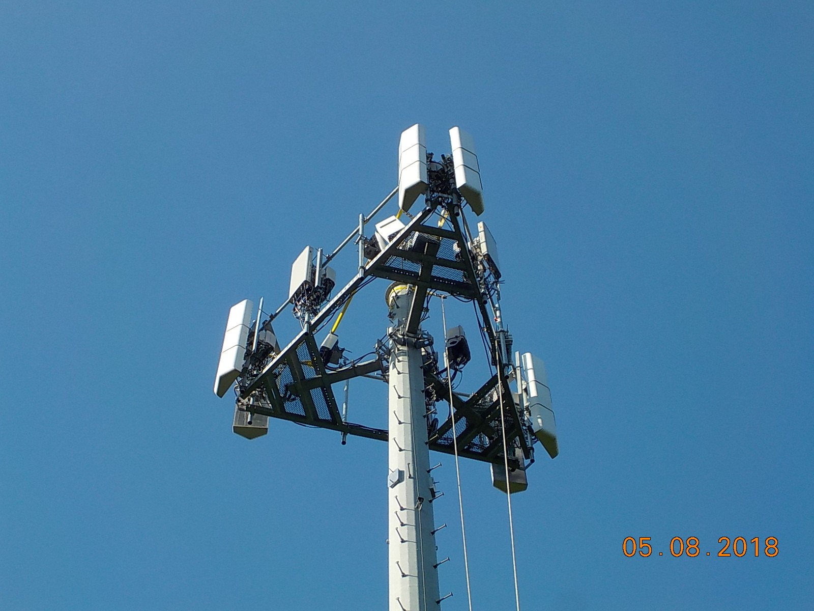
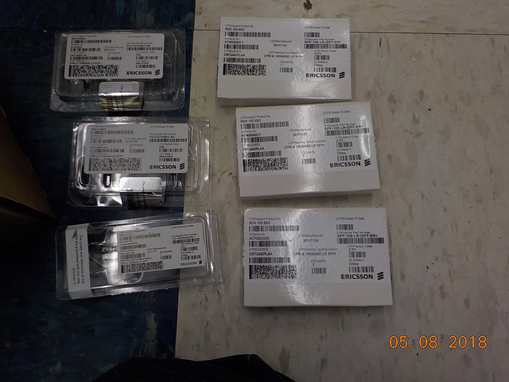
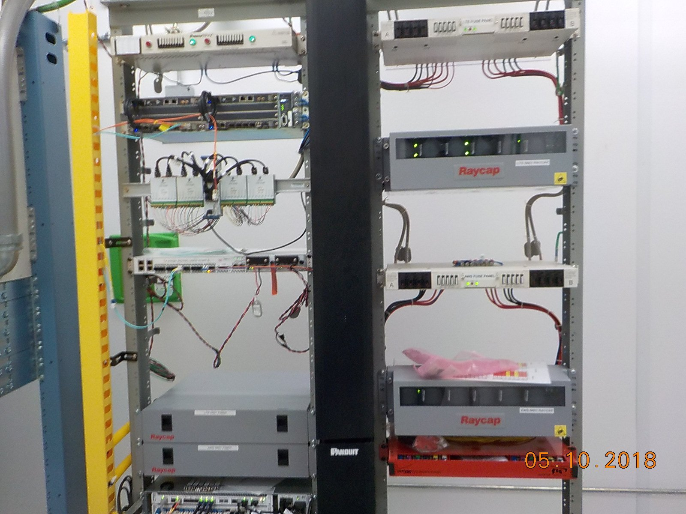
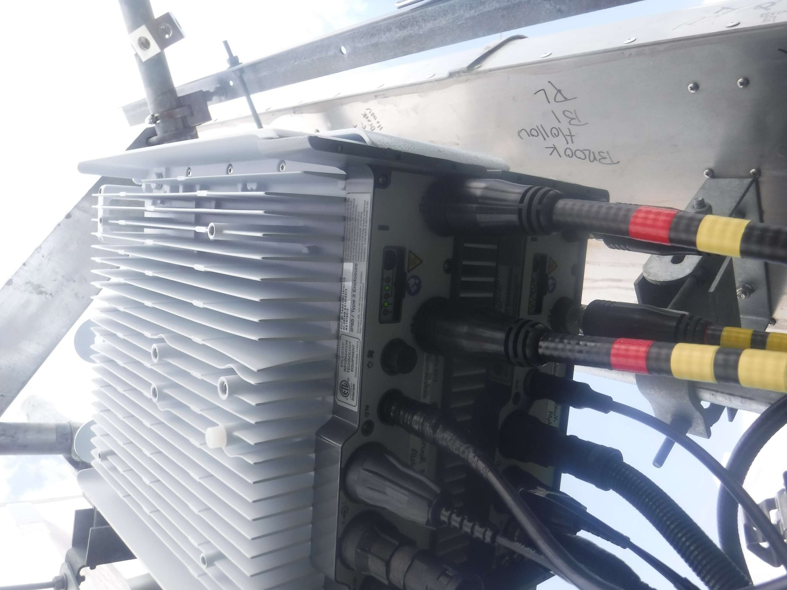
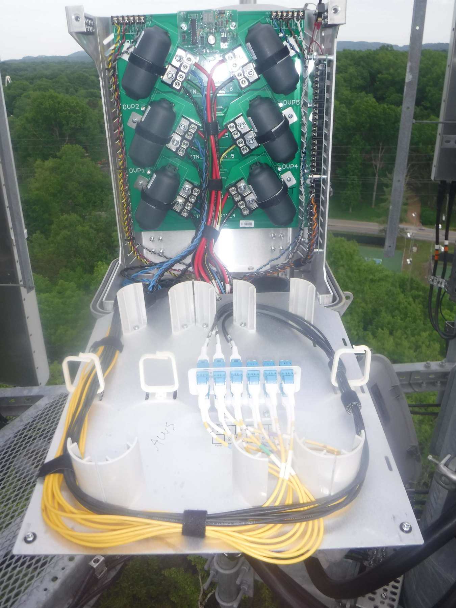
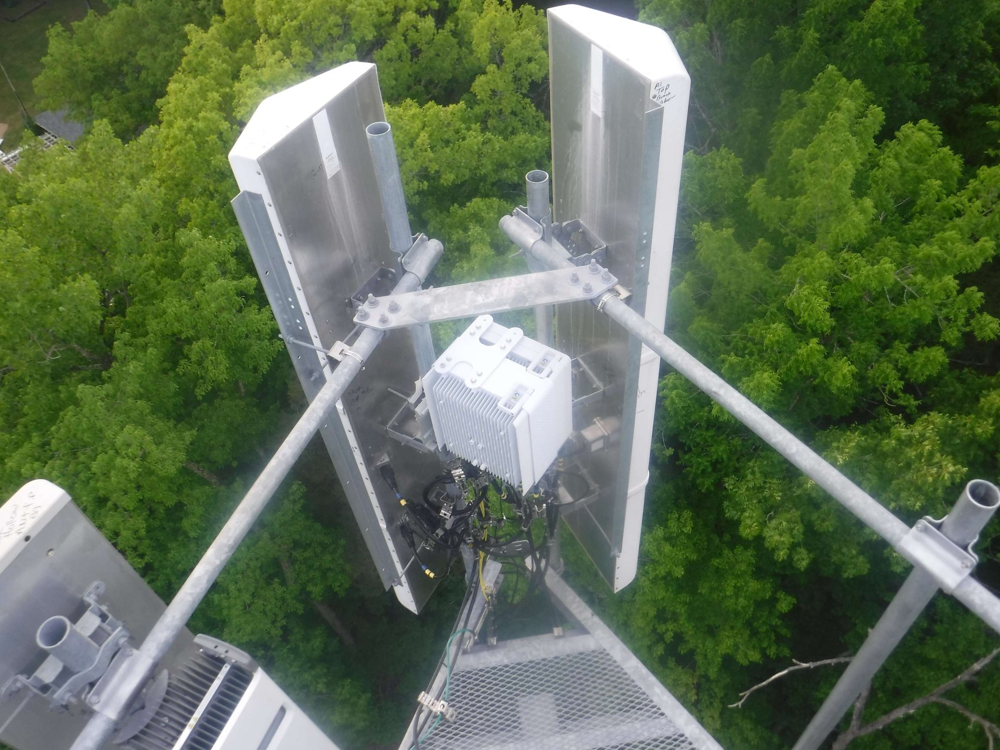
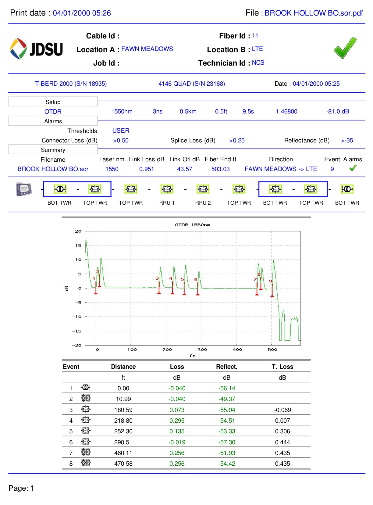
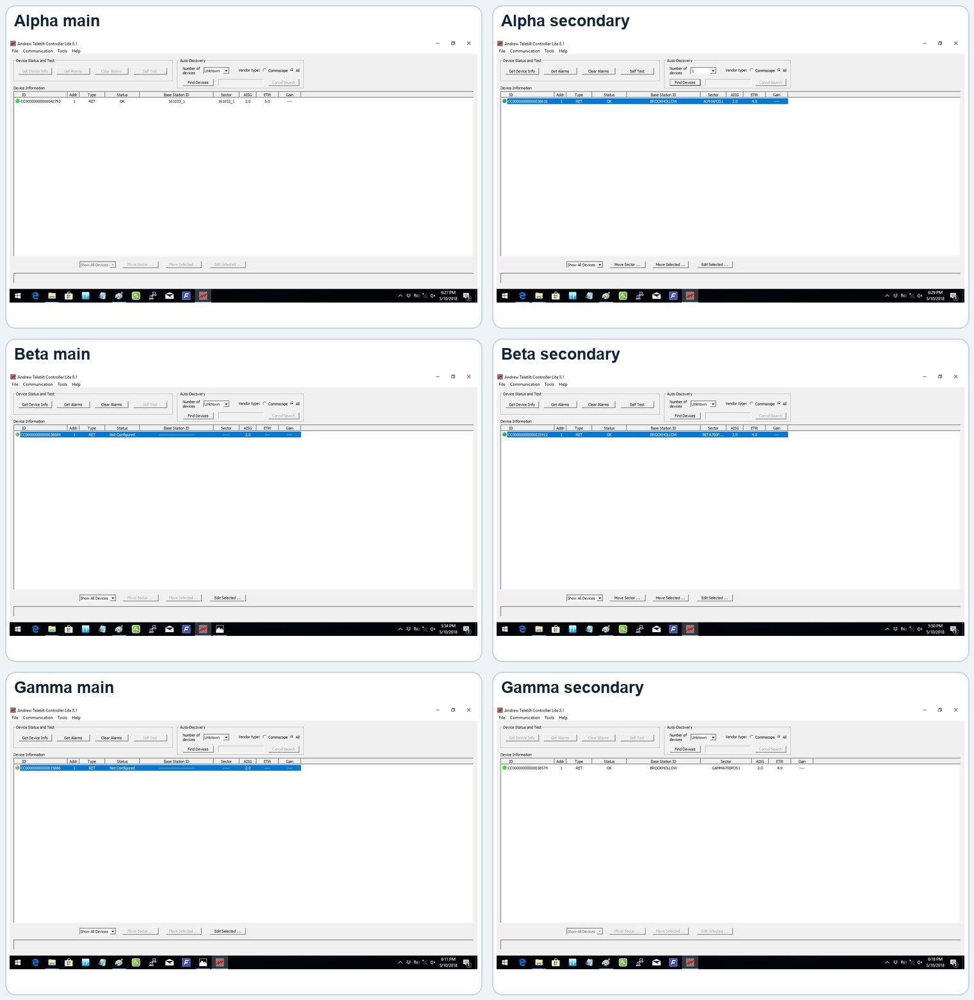

Preparation made the sector work repeatable
On May 8, I worked with the climbing crew to prepare the site and stage the 2212 and RRUS32 radios. I organized the jumpers, hybrid paths, optics, and sector assignments by color before the cutover work began. I also found that we needed nine TPA 30A glass fuses before the remaining power changes could be completed.


One modernization pattern, completed across all three sectors
The climbing crew handled the top-side radio and jumper work while I handled the ground-side changes and coordinated each sector. We completed Alpha first on May 9, followed by Beta and Gamma on May 10. In every sector, the LTE RRU12 was replaced with an Ericsson 2212, the AWS RRU12 was replaced with an RRUS32, the LTE raycap was powered for the secondary 2212, the XMU optics moved from 2.5-gigabit to 10-gigabit, and the LTE and AWS fuses moved from 20A to 30A.
During Alpha work, I also traced an existing commercial-power failure alarm to a broken wire at punch-down block 2 and corrected the alarm path.



Six fiber paths, six passing OTDR results
The six color-coded fiber paths all returned passing OTDR reports. Link loss stayed within a narrow 0.685-0.951 dB range over approximately 496-503 feet.
| Path | Link loss | Fiber end | Result |
|---|---|---|---|
| BO | 0.951 dB | 503.03 ft | PASS |
| BY | 0.785 dB | 501.98 ft | PASS |
| RO | 0.685 dB | 501.98 ft | PASS |
| RY | 0.845 dB | 495.87 ft | PASS |
| WO | 0.894 dB | 502.15 ft | PASS |
| WY | 0.708 dB | 501.98 ft | PASS |

RET evidence preserved for the next owner
Six Andrew Teletilt Controller screenshots captured the main and secondary LTE 2212 RET state across Alpha, Beta, and Gamma. The screenshots were organized for the cell technician who would continue the RET correction work the next morning.

Outcome
The field package shows a repeatable three-sector upgrade rather than a collection of tower photos: six radio replacements, three optics changes, three power-protection changes, a corrected alarm circuit, six passing fiber paths, and a clearly bounded RET handoff.